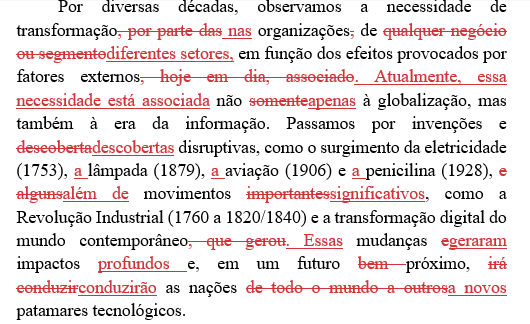

python · api de ia · critérios personalizados · documentos .docx

Sistema desenvolvido em Python que usa IA para revisar documentos longos enviados pelo usuário em formato .docx. A ferramenta analisa o texto conforme critérios de revisão personalizados e devolve o documento corrigido e aprimorado, pronto para uso.
Aceita arquivos .docx de qualquer extensão, inclusive textos longos, processando o conteúdo de forma íntegra e estruturada.
O usuário define os parâmetros de revisão — tom, norma culta, estilo, público-alvo — e a IA ajusta sua análise a cada contexto.
A IA aprimora gramática, coesão, clareza e estilo sem descaracterizar a voz original do autor.
O sistema devolve o arquivo .docx já revisado, mantendo a formatação original e incorporando todas as melhorias.
O processo é simples para o usuário, mas robusto por baixo dos panos.
O usuário faz o upload do arquivo .docx diretamente na interface do sistema.
Os parâmetros de revisão já foram predefinidos e podem ser personalizados: finalidade do texto, nível de linguagem, normas a seguir e prioridades de ajuste.
O sistema divide o documento em blocos, envia cada trecho à API de IA com o contexto dos critérios e recebe as revisões segmento a segmento.
Python remonta o documento .docx com o conteúdo revisado, preservando estrutura, títulos e formatação originais.
O arquivo revisado fica disponível para download imediato, pronto para entrega.